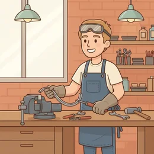

Maße und Zeichnungen besprechen, Fehler melden, sicher arbeiten.
Schau dir das Bild an
Maße und Zeichnungen besprechen, Fehler melden, sicher arbeiten.

🗣️ Zum Einstieg – sprecht reihum: Beschreibt das Bild. Nutzt: „Auf dem Bild sehe ich …“, „Die Person …“, „Im Hintergrund ist …“
Erste Fragen
Was liegt auf dem Bild auf der Werkbank?
Was schaust du dir auf einer Zeichnung zuerst an?
Was machst du, wenn ein Maß nicht stimmt?
Kennst du das aus deinem Alltag? Erzähl davon.
Wortschatz
Tipp auf 🔊, um das Wort zu hören. Lies den Satz darunter laut.
die Werkbank
Der Tisch, an dem du arbeitest.
der Schraubstock
Hält das Werkstück fest.
die Feile
Werkzeug, das Kanten glatt macht.
schweißen
Zwei Metallteile mit Hitze verbinden.
die Naht
Die Linie, an der geschweißt wurde.
bohren
„Der Zahnarzt muss den Zahn bohren, das Geräusch ist laut.“
das Maß
Die genaue Größe in Millimetern.
die Toleranz
„Im Alltag braucht man Toleranz für andere Meinungen und Bräuche.“
der Grat
Die scharfe Kante nach dem Schneiden.
die Zeichnung
Das Blatt mit allen Maßen.
die Schutzbrille
„Ohne Schutzbrille darfst du nicht an die Maschine.“
der Span
Der kleine Rest, der beim Bohren abfällt.
spannen
Ein Teil fest einklemmen.
prüfen
Nachmessen, ob alles stimmt.
Beispieldialoge
Lest zu zweit mit verteilten Rollen — dann spielt es mit euren eigenen Worten nach.
💬 Einen Fehler beim Zuschnitt zugeben · B1–B2
Werkstatt. Du hast die Bretter zu kurz zugeschnitten. Der Meister kommt zur Kontrolle.
A
Wie weit sind Sie mit dem Regal für Familie Meier?
B
Ich muss Ihnen etwas sagen: Ich habe die Seitenteile falsch zugeschnitten. Sie sind fünf Zentimeter zu kurz.
A
Fünf Zentimeter? Wie ist das denn passiert?
B
Ich habe die Maße aus der alten Zeichnung genommen. Dass es eine neue Version gibt, habe ich zu spät gesehen. Das war mein Fehler.
A
Ärgerlich. Und jetzt? Das Holz ist teuer.
B
Aus den kurzen Teilen könnte ich die Zwischenböden machen. Dann brauchen wir nur zwei neue Bretter statt vier.
A
Gute Idee. Und wie stellen Sie sicher, dass das nicht noch einmal passiert?
B
Ich schaue vor dem Zuschnitt immer auf das Datum der Zeichnung. Und wenn etwas unklar ist, frage ich lieber einmal mehr nach.
🗣️ Sätze, die immer passen
Ich muss Ihnen etwas sagen: …Mir ist ein Fehler passiert.Ich habe … falsch gemacht.Ich habe … verwechselt.Der Grund war, dass …Das war mein Fehler.Mein Vorschlag wäre …Wir könnten … noch verwenden für …Soll ich neues Material bestellen?Beim nächsten Mal werde ich …
🎭 Jetzt ihr: Spielt einen eigenen Dialog zum Thema — eine Person fragt, die andere antwortet.
Debatte: Lieber schnell arbeiten oder lieber genau?
Teilt euch in zwei Gruppen. Jede Gruppe sammelt drei Argumente — eins steht schon da.
✓ Dafür
Tempo — der Auftrag muss raus.
Findet ein zweites Argument.
Und ein drittes.
✓ Dagegen
Genauigkeit — Nacharbeit kostet mehr Zeit.
Findet ein zweites Argument.
Und ein drittes.
🗣️ Redemittel für die Debatte — bau diese Sätze ein:
Ich finde, dass …Ein Vorteil ist …Ein Nachteil ist …Meiner Meinung nach …Das stimmt, aber …Ich sehe das anders.Ich stimme dir zu.
🏁 Abschluss: Jede Gruppe nennt ihr bestes Argument. Danach sagt jeder einen eigenen Satz dazu.
Frei sprechen
Drei Aufträge. Nimm dir einen, sprich eine Minute — dann tauscht ihr.
📋 Leitfaden — sprich über diese Punkte:
Erklär einem Kollegen ein Teil nach der Zeichnung.
Melde, dass ein Maß außerhalb der Toleranz liegt.
Sag, welches Werkzeug du brauchst und warum.
👥 Zu zweit · ⏱️ ca. 10 Minuten: Erst zu zweit sprechen, danach berichtet ihr der Gruppe kurz davon.
⏱️ 90-Sekunden-Challenge
Erzähle, wie du zu deinem Beruf gekommen bist. Ein Wort, neunzig Sekunden, keine Pause. Die Hilfswörter sind dein Netz.